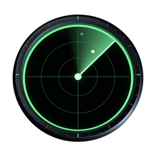

You are offline
This page was not saved on this device yet, and there is no connection to fetch it. These views were saved earlier and open without one (live feeds wait until you are back online):

This page was not saved on this device yet, and there is no connection to fetch it. These views were saved earlier and open without one (live feeds wait until you are back online):